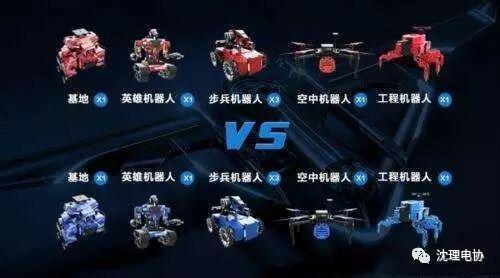
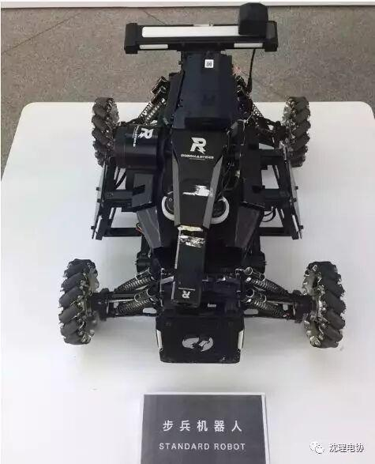
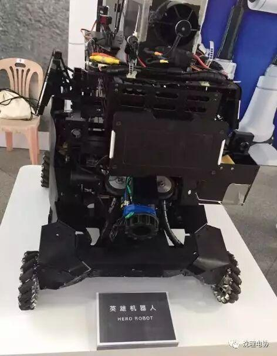
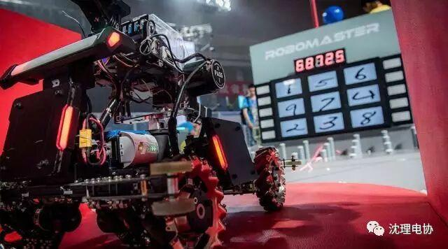
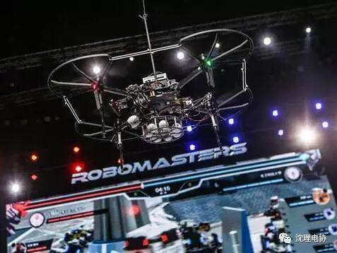
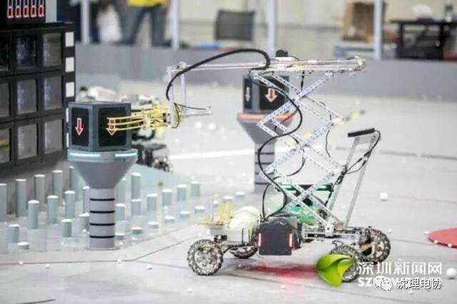
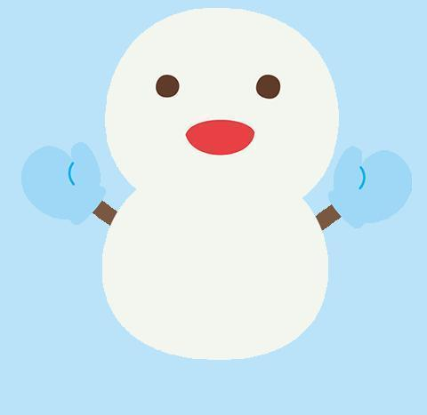

robomaster规则解析
rm规则解析
赛制规则

比赛在长28米、宽15米，规格与标准篮球场相同的战场中进行。双方战队的基地机器人分别位于战场两端，英雄机器人、步兵机器人则可四处游走，攻击对手。战场中设计了“河流”、“荒地”、“桥梁”等地形，机器人需灵活应对；功能不同的“神符”散落在战场各处，抢占神符可令机器人在短时间内获得生命值恢复、攻击力增加等优势。
步兵机器人

今年的比赛规则对功率作出了要求：步兵机器人底盘的总功率（即四个电机输出的总功率）最高为80W；如果超过80W，步兵机器人就会自动掉血。这对参赛队员的电机控制技术提出了很高的要求，只有利用可靠合理的电机驱动才能保证步兵机器人顺利地参加战斗。
英雄机器人

英雄机器人必须按照要求安装裁判系统，可以安装一个相机图传模块，一个遥控器，以及可同时安装个17mm口径的发射机构和一个42.mm口径的发射机构。英雄机器人的射速和射频均受到裁判系统限制，但底盘不受限制。

比赛中，每方仅可放置一个基地机器人在己方基地区域内，基地机器人没有相机图传模块和遥控器，只能在指定的基地地区内全自动的移动。
空中机器人

工程机器人

工程机器人可以通过使用一张ic卡实现治疗英雄机器人，步兵机器人。比赛过程中工程机器人可以把ic卡放在地面，双方机器人都可以通过读取获得治疗效果。工程机器人最多可恢复每个机器人50%的血量，每秒恢复25滴血。

点击阅读原文，一起玩耍

编辑：金磊